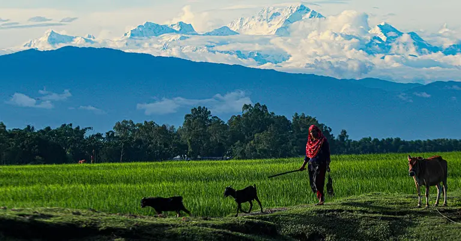

কাঞ্চনজঙ্ঘা হিমালয় পর্বতমালার একটি পর্বতশৃঙ্গ। মাউন্ট এভারেস্ট ও এর পরে এটি ভারতের উচ্চতম পর্বতশৃঙ্গ[৩] যার উচ্চতা ৩৬৩০ মিটার । এটি ভারতের সিকিম রাজ্যের সঙ্গে নেপালের পূর্বাঞ্চলীয় সীমান্তে অবস্থিত। হিমালয় পৰ্বতের এই অংশটিকে কাঞ্চনজঙ্ঘা হিমালয় বলা হয়।
যদিও সারা বছর তেঁতুলিয়া থেকে দেখার সৌভাগ্য হয় না। সাধারণত অক্টোবর এবং নভেম্বর মাসে আকাশ পরিষ্কার থাকলে পঞ্চগড় থেকে দেখা যায় কাঞ্চনজঙ্ঘার শৃঙ্গ। সেখানের ডাকবাংলোর পিকনিক কর্নারের কাছে থেকে সবচেয়ে স্পষ্ট দেখা যায় কাঞ্চনজঙ্ঘা। এদিন পঞ্চগড়ের পাশাপাশি মহানন্দা নদীর পার থেকেও কাঞ্চনজঙ্ঘা দেখার জন্য ভিড় জমান পর্যটকরা।
